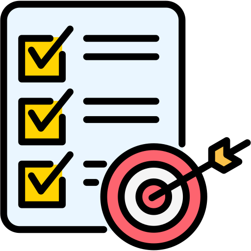

Descripción General
Mi nombre es Felipe Izquierdo Romero. Tengo 25 años, vivo en Fuenlabrada, Madrid.
Me considero una persona proactiva y amigable. Adoro todo lo relaccionado con las
nuevas tecnologías y me apasiona la informática.

Descripción académica
Poseo el grado de DAM "Desarrollo de aplicaciones multiplataforma".
Además busco cursos y certificados gratuitos con los que aprender y complementar mi formación
poseo un certificado gratis online a través de la página coursera sobre iniciación a python.
y estoy realizando una certificación de C# y de JavaScript en "https://www.freecodecamp.org/"

Objetivos
Mis objetivos a corto plazo es conseguir un trabajo de desarrollador que a posterior pueda ir
tomando mas responsabilidades y ser una pieza importante en la empresa.
A medio plazo publicar el videojuego que desarrollo en mis tiempos libres en Unity.
Y más a largo plazo me gustaria aprender ciberseguridad, ensambladores y algo de diseño grafico.